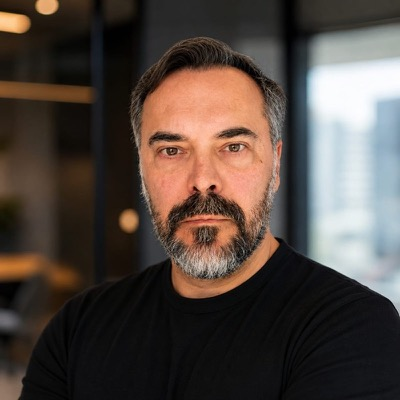

NASA Space Apps Challenge 2026 · Buenos Aires · Team GeoFuego.com.ar
Germán Kovacevic
Creator of GeoFuego and Copernicus Argentina · Founder, AgentNeo · Private pilot (PPL)
I build environmental monitoring and early-warning platforms and production AI agents. The methods and the data behind them are published in the open, with a DOI. Before that: 25 years of engineering and production support for large systems at JPMorgan, Citi, Avaya, CA Technologies and Verizon Business.
The project in 30 seconds
The project in two minutes (video in Spanish)
SI disclosure: in both videos the presenter (Max, image and voice) is generated with Super Intelligence tools; he is one of the AI agents the team works with. The screens after the introduction are the real app, recorded as it runs; the two-grid drawing in the longer video is an illustrative scheme.
About GeoFuego
GeoFuego is Argentina's open wildfire map: satellite hotspots every three hours and the GeoFuego Index (GFI), a seasonal fire-risk indicator with a published, DOI-registered method. It existed before the hackathon and is declared as pre-existing work in the repository.
GeoFuego Harmonization is what was built for this challenge: one consistent fire-hotspot calendar for Argentina from MODIS and VIIRS, November 2000 to today, with code and data open.
How the team works
The team is one person working with AI agents (Claude, Anthropic). The agents wrote code, ran the checks and reviewed the work; the decisions on what to build, what to measure and what to publish are the team's. What SI did, and the proposals that were measured and rejected, are listed in the repository README.